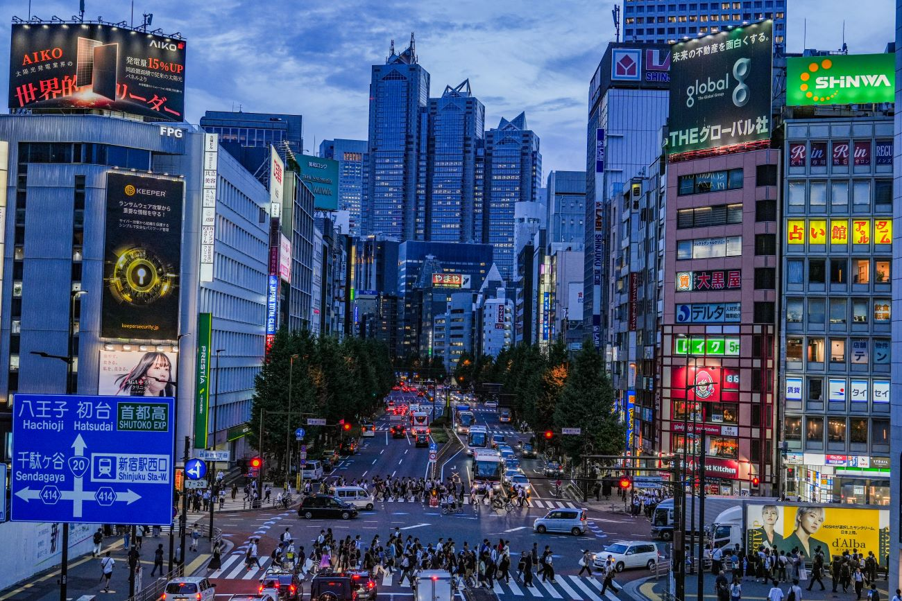
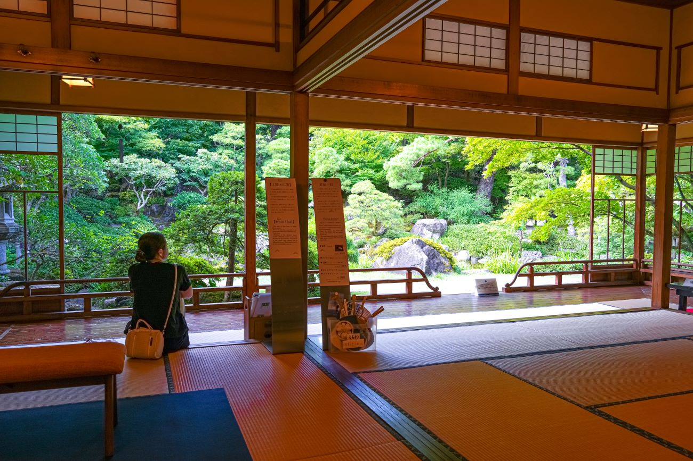
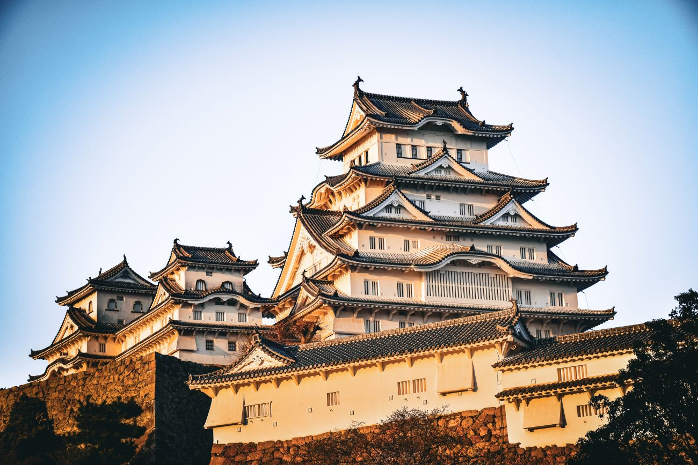

Partez à la découverte du Japon
Bienvenue au pays du soleil levant
Le Japon est un archipel situé en Asie de l'Est,
composé de quatre îles principales : Honshu, Hokkaido, Kyushu et Shikoku, ainsi que de milliers d'îles plus petites. Ce pays est connu pour son mélange unique de traditions anciennes et de modernité.

Les différentes régions
Le Japon se divise en neuf régions :
Hokkaido, Tohoku, Kanto, Chubu, Kansai, Chugoku, Shikoku, Kyushu et Okinawa. Chaque région possède sa propre culture, ses paysages et ses spécialités.

Son histoire et ses monuments
Parmi les monuments les plus célèbres, on trouve le temple Kinkaku-ji à Kyoto,
le château d'Himeji, et le sanctuaire Meiji à Tokyo. Le Mont Fuji, symbole sacré, est aussi un site incontournable, incarnant à la fois la beauté naturelle et spirituelle du pays.
